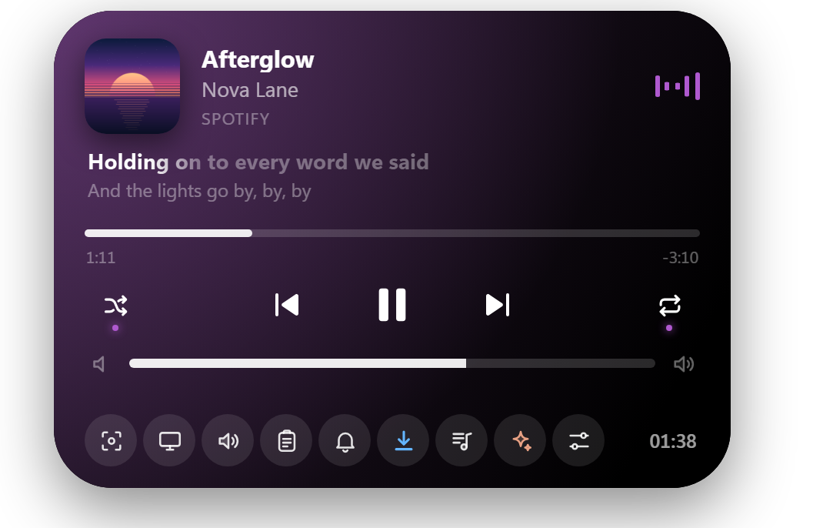

WowIsland for Windows
The island Windows was missing.
Music and lyrics, 2FA codes, notifications and downloads.
All in one place, at the top of your screen.

Music and lyrics, 2FA codes, notifications and downloads.
All in one place, at the top of your screen.